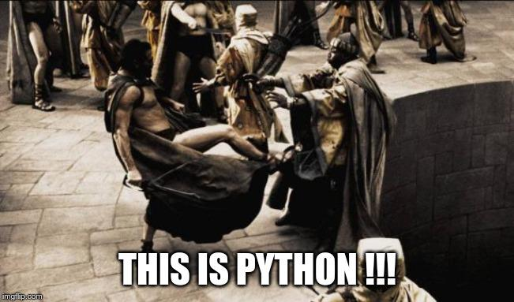

Dekoratory w Pythonie
Ostatnich kilka artykułów na tym blogu, było związane z ogólnikami dotyczącymi testów i zawodu testera. Tym razem wpis typowo techniczny związany z moim ulubionym językiem programowania, czyli Pythonem. Język ten ma pewne magiczne metody i elementy nie spotykane w innych językach (lub sposób ich użycia i implementacji jest dużo bardziej złożony). Jednym z takich elementów jest tzw. dekorator.
Czym jest dekorator?
W skrócie dekorator to jeden ze strukturalnych wzorców projektowych. Pozwala on na dynamiczne dodanie nowej funkcji do istniejącej klasy podczas działania programu.
W Pythonie, implementacja dekoratorów dla metod po raz pierwszy została dodana w wersji 2.4 języka, a dokument, który to opisywał to PEP 318 - Decorators for Functions and Methods (PEP to skrót od Python Enhancement Proposals). W Pythonie 3.0, wprowadzono natomiast możliwość tworzenia dekoratorów dla klas (opis w PEP 3129 - Class Decorators).
Zasada działania dekoratorów polega na opakowaniu (tzw. enkapsulacji) oryginalnej klasy, nową klasą, tzw. klasą dekorującą.
Na czym polega opakowywanie? Najprościej porównać to do starej rosyjskiej zabawki, matrioszki.
Jeśli nie wiesz czym jest ta zabawka, to polecam zapoznać się z poniższym filmikiem, bo zasada działania idealnie odzwierciedla mechanizm opakowywania (a jeśli znasz tą zabawkę, tzn. że zapewne jesteś co najmniej tak stary jak ja  ).
).
Jak widać Matrioszka, to zabawka, w której mniejsze Matrioszki, umieszczane są w środku większej. Mniejsza Matrioszka jest wtedy enkapsulowana w większej. Ta mniejsza Matrioszka to nasza klasa dekorowana, a większa to klasa dekorująca. Tak jak i w przypadku Matrioszek, tak i dekoratorów może być więcej niż jeden. Jedyna różnica pomiędzy Matrioszką, a dekoratorem jest taka, że Matrioszka to w zasadzie taka sama lalka jak jej mniejsza wersja (różnią się głównie rozmiarem). Dekorator natomiast to zupełnie inna klasa, która dodaje nowe możliwości do już istniejącej klasy (Matrioszka tego nie potrafi).
Zauważ jedną, bardzo istotną rzecz: wszędzie powyżej wspominam, że dekorator jest klasą opakowującą inną klasę, a wspomniany PEP 318 mówi o dekorowaniu funkcji i metod. Czy przypadkiem nie ma tu gdzieś błędu?
Funkcja jest obiektem
Zanim przejdziemy do sedna, to zapoznajmy się z definicją obiektu. Mocno streszczając, obiekt to struktura zawierająca dane i metody/funkcje służące do wykonania jakichś operacji na tych danych. Bardzo szybko zauważymy, że ten opis idealnie pasuje do klasy. Obiekt stworzony na podstawie definicji klasy, jest instancją danej klasy.
Dlaczego więc, w Pythonie mówimy o dekorowaniu funkcji lub metod danej klasy (które też są funkcjami)? Otóż przyczyna jest bardzo prosta: funkcje w Pythonie są obiektami/klasami (nie zdziw się, bo od teraz będę używał tych nazw zamiennie). Jak każdy obiekt w Pythonie, tak i funkcja ma swój typ:
def example_function(): print("Example") type(example_function)
>>> function
Ponieważ funkcja jest obiektem, możemy ją przechowywać w zmiennej:
def example_function(): print("Example") var = example_function var()
>>> Example
example_function()
>>> Example
Zauważ, że podczas przypisywania funkcji do zmiennej pominąłem nawiasy (). Pominięcie nawiasów powoduje, że do zmiennej var przypisany jest adres w pamięci, gdzie przechowywane jest kod funkcji. Dopiero wywołanie var() powoduje taki sam efekt jak bezpośrednie wywołanie funkcji example_function().
Dodatkowo w ciele funkcji, można zdefiniować inną funkcję. Funkcja wewnętrzna nie będzie jednak mogła być wywołana spoza funkcji, w której jest umieszczona:
def external_function(): def internal_function(): print("Internal") print("External") internal_function() external_function()
>>> External
Internal
internal_function()
>>> Traceback (most recent call last):
File "/.../interactiveshell.py", line 3326, in run_code
exec(code_obj, self.user_global_ns, self.user_ns)
File "<ipython-input-17-6f1c04ea4501>", line 1, in <module>
internal_function()
NameError: name 'internal_function' is not defined
Widzimy, że interpreter Pythona nie zna definicji funkcji internal_function.
Skoro już wiemy, że funkcja jest obiektem, to ciekawe czy obiekt może być funkcją?
Czy obiekt może być funkcją?
W Pythonie klasy posiadają pewne metody magiczne. Jedną z nich jest metoda __call__. W przypadku klasy, funkcja ta umożliwia uruchomienie instancji klasy, tak jak by była funkcją:
class FuncClass(): def __init__(self): self.var = [] def __call__(self, element): self.var.append(element)
Powyżej widzisz klasę, która ma zaimplementowane 2 metody magiczne:
__init__, która definiuje zmiennąvarjako pustą listę i wywoływana jest podczas inicjalizacji instancji klasy (uwaga, to nie jest konstruktor, choć wiele osób tą metodę tak określa),__call__, która przyjmuje jako argument wywołania dowolnyelementi dodanie go do listy w zmiennejvar.
Powyższa implementacja to nic skomplikowanego. Sprawdźmy zatem jak zachowuje się taka klasa.
f = FuncClass() # Utworzenie instancji klasy f.__call__(1) # Wywołujemy bezpośrednio metodę __call__ instancji f print(f.var)
>>> [1]
# Tym razem odnosimy się do instancji f z pominięciem metody __call__ # (zostanie ona automatycznie wywołana przez interpreter) f("Drugi") print(f.var)
>>> [1, 'Drugi']
Widać powyżej, że klasa, może zachowywać się jak funkcja. Każdy obiekt w języku Python, może (nie musi) mieć zaimplementowaną metodę __call__. Skoro tak jest, to sprawdźmy czy normalna funkcja też ją ma. Wróćmy więc do naszej bardzo prostej funkcji:
def example_function(): print("Example")
Wiemy już, że możemy ją wywołać poprzez example_function() co w wyniku spowoduje wyświetlenie napisu Example. A co z metodą __call__? Sprawdźmy:
example_function.__call__()
>>> Example
Udowodniliśmy właśnie, że klasa może zachowywać się jak funkcja oraz, że funkcja jest obiektem. Co prawda obiekt ten jest w pewien sposób ograniczony (nie da się do niego np. dynamicznie dodać zmiennej lub odczytać zmiennych z ciała funkcji), ale jednak jest obiektem.
Wróćmy jednak do dekoratorów.
Pierwszy dekorator
Na początku pisałem, że dekorator to klasa, która opakowuje inną klasę dodając do opakowywanej klasy nową funkcjonalność. Skoro już wiemy, że funkcja jest klasą/obiektem to w Pythonie dekoratorem może być zarówno funkcja jak i klasa. Aby sobie nie utrudniać na początku, zacznijmy od implementacji dekoratora w postaci funkcji. Jednak, aby móc zaimplementować dekorator, musimy mieć co udekorować. Rozpatrzmy zatem taką prostą funkcję:
def add(first, second): print(first + second)
Powyższa funkcja ma za zadanie dodać do siebie 2 elementy. Sprawdźmy więc jak działa:
add(1, 2)
>>> 3
Wszystko super. Wynik taki jak się spodziewaliśmy. Sprawdźmy zatem inny zestaw argumentów:
add("1", "2")
>>> 12
Co? Jak to możliwe, że dostaliśmy 12? Zauważ, że jako argumenty podaliśmy tekst z cyframi 1 i 2, a nie liczby 1 i 2. Interpreter Pythona uznał, że zamiast dodawania dwóch liczb, chcemy połączyć dwa ciągi znaków w jeden dłuższy ciąg znaków. Jak naprawić taki, kod nie zmieniając ciała funkcji add?
Wykorzystamy w tym celu dekorator. Zacznijmy jednak od kilku rzeczy, które pomogą nam zrozumieć jak w swoim wnętrzu działa taki dekorator. Sprawdźmy jak działa poniższy kod:
def decorator(func): print(f"Decorated function name: {func.__name__}") return func def add(first, second): print(first + second) add = decorator(add) add(1, 2)
>>> Decorated function name: add
3
Implementacji funkcja decorator jako argument przyjmuje ciało innej funkcji. Ma za zadnie wyświetlić jej nazwę oraz po prostu ją zwrócić.
Następnie wykorzystana została właściwość, o której pisałem powyżej, czyli możliwości przypisania funkcji do zmiennej (w tym przypadku funkcję add przypisujemy do zmiennej o tej samej nazwie, czyli również add). Takie przypisanie powoduje, że zmienna add staje się funkcją, która w pierwszej kolejności wywoła dekorator, którego argumentem będzie rzeczywista funkcja add.
Niestety taki zapis jest mało czytelny i nie do końca widać (patrząc tylko na definicję funkcji add), że została ona udekorowana. W Pythonie na szczęście istnieje na to prosty sposób:
@decorator def add(first, second): print(first + second) add(1, 2)
>>> Decorated function name: add
3
Implementację funkcji decorator pozostawiłem bez zmian, natomiast funkcja add została udekorowaną. Służy do tego zapis @decorator tuż powyżej jej definicji.
Na końcu funkcja add została wywołana z dwoma argumentami w taki sam sposób jak wcześniej.
W obu przypadkach wynikiem działania jest wyświetlenie nazwy funkcji (część za którą odpowiedzialny jest dekorator) oraz wynik dodawania dwóch liczb (za to odpowiedzialna jest funkcja add, która nie została w żaden sposób zmodyfikowana).
Notacji z wykorzystaniem @decorator, jest tzw. syntactic sugar dla poprzedniego zapisu add = decorator(add).
Jeśli używasz już Pythona od pewnego czasu, to powyższy zapis nie powinien być dla Ciebie zupełnie obcy. Zapewne spotkałeś się z nim już nie raz, podczas tworzenia swoich własnych klas, gdzie często wykorzystywane są m.in. następujące dekoratory:
@classmethod@staticmethod@property
args i kwargs
Wiemy już, jak stworzyć prosty (jeszcze nic nie robiący) dekorator. Skoro do środka dekoratora przekazujemy funkcję, to gdzieś powinny być jeszcze widoczne wszystkie argumenty, które do danej funkcji są przekazywane w momencie jej wywołania. Rozważmy poniższą definicję dekoratora (implementację funkcji add pominę, gdyż założyliśmy na początku, że jej nie zmieniamy):
def decorator(func): def wrapper(*args, **kwargs): print(f"args (type: {type(args)}): {args}") print(f"kwargs (type: {type(kwargs)}): {kwargs}") return wrapper
Do definicji wewnętrznej funkcji wrapper dodałem dwa atrybuty:
*args**kwargs
Zobaczmy teraz co się stanie jak wywołamy poniższy kod:
add(1, 2)
>>> args (type: <class 'tuple'>): (1, 2)
kwargs (type: <class 'dict'>): {}
Widzimy, że argumenty przekazane do funkcji tworzą zmienną args o typie touple (krotka), natomiast zmienną kwargs jest typu dict (słownik), ale jest to pusty słownik.
Co się stanie, jak wywołamy funkcję add w inny sposób:
add(first=1, second=2)
>>> *args (type: <class 'tuple'>): ()
**kwargs (type: <class 'dict'>): {'first': 1, 'second': 2}
Widzimy teraz, że args jest puste, natomiast kwargs zostało wypełnione.
Możemy wywołać funkcję add również jako miks powyższych wywołań:
add(1, second=2)
>>> *args (type: <class 'tuple'>): (1,)
**kwargs (type: <class 'dict'>): {'second': 2}
Teraz zarówno args jak i kwargs zostały wypełnione.
Domyślasz się już zapewne czym są args i kwargs, ale dla ścisłości odpowiedzmy sobie na pytanie:
*args- nienazwane argumenty przekazywane do funkcji przyjmujące postać krotki ze względu na zachowanie kolejności argumentów**kwargs- nazwane argumenty przekazywane do funkcji przyjmujące postać słownika ze względu na powiązanie nazwy argumentu (key), z jej wartością (value).
Możliwość przekazania argumentów do funkcji przy użyciu args i kwargs niesie za sobą pewne implikacje. Najważniejszą implikacją jest konieczność obsłużenia obu przypadków w ciele dekoratora, jeśli chcemy wykonać jakieś operacje na atrybutach przekazywanych do dekorowanej funkcji.
Wróćmy teraz do napisania dekoratora, który ma za zadanie sprawdzić typ argumentów przekazywanych do funkcji add tak, aby przeprowadziła działanie dodawania dwóch liczb.
Przyjmijmy najprostsze założenie, że aby funkcja zadziałała poprawnie, argumenty funkcji muszą być typu int lub float. W przypadku jeśli dowolny z argumentów, będzie innym typem, funkcja nie zostanie uruchomiona i zostanie zwrócony wyjątek typu TypeErrror.
def decorator(func): def wrapper(*args, **kwargs): # Zmienna określająca czy typy argumentów są poprawne is_correct = True # Utworzenie kopi listy argumentów arguments = list(args) # Rozszerzenie listy argumentów arguments.extend(kwargs.values()) for arg in arguments: # Poniższe wyrażenia zawiera w sobie dwie ciekawe # konstrukcje: # 1. tzw. short if sprawdzający czy podany argument jest # typu int lub float i zwracający odpowiednią wartość # 2. operator mnożenia z przypisaniem *= powoduje, że gdy # choć jeden z atrybutów nie będzie odpowiedniego typy # to zmienna is_correct przybierze wartość False is_correct *= True if \ any(isinstance(arg, t) for t in [int, float]) else False if is_correct: # Przekazanie argumentów do dekorowanej funkcji, # która zostaje wywołana, a jej wynik zwrócony return func(*args, **kwargs) else: # Zwrócenie wyjątku, gdy choć jeden atrybut przekazany do # funkcji nie jest typu int lub float raise TypeError("One of the arguments is not int or float") return wrapper @decorator def add(first, second): print(first + second)
Mam nadzieję, że powyższy kod jest dla Ciebie zrozumiały (umieściłem odpowiednie komentarze w samym kodzie, aby lepiej wyjaśnić co on robi).
Jeśli jednak masz problem ze zrozumieniem zapisu is_correct *= True if any(isinstance(arg, t) for t in [int, float]) else False poniżej umieszczam jego ekwiwalent:
is_correct_helper = False for t in [int, float]: if isinstance(arg, t): is_correct_helper = True is_correct *= is_correct_helper
Zauważ jednak, że ten kawałek kodu wymaga wprowadzenia dodatkowej zmiennej pomocniczej is_correct_helper i nie jest tak zwięzły jak wcześniejszy zapis, a którego będę używał w późniejszych przykładach.
Sprawdźmy teraz czy powyższy kod działa poprawnie dla argumentów o poprawnych typach:
add(1, 2.0)
>>> 3.0
Wynik jest poprawny. A co jeśli jeden z argumentów będzie ciągiem znaków?
add(1, "2.0")
>>> Traceback (most recent call last):
File "/.../interactiveshell.py", line 3326, in run_code
exec(code_obj, self.user_global_ns, self.user_ns)
File "<ipython-input-2-fc0327af835d>", line 20, in <module>
add(1, "2.0")
File "<ipython-input-2-fc0327af835d>", line 13, in wrapper
raise TypeError("One of the arguments is not int or float")
TypeError: One of the arguments is not int or float
Zgodnie z podejrzeniem wynikiem działania jest wyjątek typu TypeError, a więc taki jaki zakładaliśmy.
Widzimy więc, że nasz dekorator działa tak jak tego oczekiwaliśmy, a nasza funkcja dekorowana (add) nie została zmodyfikowana.
wraps
Rozważmy teraz inną kwestię, tzn. dokumentację do naszego kodu. Do tej pory w naszym kodzie, nie ma ani jednej linijki opisującej czym nasza dekorowana funkcja się zajmuje. Dodajmy najprostszą możliwą formę dokumentacji czyli pojedynczą linię komentarza pod definicją funkcji (zauważ, że pominąłem dodanie dekoratora):
def add(first, second): """Add to elements and print the result""" print(first + second)
Spróbujmy teraz wywołać jedną z metod, która wykorzystywana jest przez narzędzia do budowania dokumentacji kodu, np. Sphinx.
print(add.__doc__)
>>> Add to elements and print the result
Widzimy, że poprzez wywołanie jednej z metod magicznych możemy dostać się do naszego opisu funkcji. Sprawdźmy teraz co się stanie jak udekorujemy funkcję naszym dekoratorem:
@decorator def add(first, second): """Add to elements and print the result""" print(first + second) print(add.__doc__)
>>> None
Dekorator wszystko nam popsuł  .
.
Dlaczego tak się dzieje? Otóż add.__doc__ pobiera teraz opis nie z funkcji add, a z dekoratora.
Możemy to rozwiązać bardzo łopatologicznie, ale ponieważ ktoś już o tym pomyślał, to wykorzystamy gotową funkcję. Wchodzi ona w skład bibliotek standardowych i jest częścią pakietu functools. Zaimportujmy zatem funkcję wraps i jej użyjmy (funkcja add pozostaje bez zmian).
from functools import wraps def decorator(func): @wraps def wrapper(*args, **kwargs): is_correct = True arguments = list(args) arguments.extend(kwargs.values()) for arg in arguments: is_correct *= True if \ any(isinstance(arg, t) for t in [int, float]) else False if is_correct: return func(*args, **kwargs) else: raise TypeError("One of the arguments is not int or float") return wrapper print(add.__doc__)
>>> Add to elements and print the result
Zauważ, że funkcja ta została wykorzystana do udekorowania funkcji wewnętrznej naszego dekoratora i że dokumentacja została poprawnie wyświetlona. Funkcja ta poprawia wyświetlanie również innych wartości, które nadpisywane są przez użycie dekoratora, ale po więcej szczegółów odsyłam do dokumentacji.
Dekorator z parametrami
A co gdybyśmy chcieli np. wymusić, aby dekorator (poza już istniejącą implementacją) sprawdzał, czy oba parametry były tego samego typu? Musielibyśmy być w stanie przekazać do dekoratora jakieś dodatkowy parametr. Skoro wiemy, że dekorator jest funkcją, to być może dało by się do takiego dekoratora przekazać ten parametr jako argument funkcji? Sprawdźmy więc.
def decorator(args_type_list=None): # Dekorator z argumentem def inner_decorator(func): # Wcześniejszy dekorator def wrapper(*args, **kwargs): is_correct = True arguments = list(args) arguments.extend(kwargs.values()) # Zmienna pomocnicza użyta podczas sprawdzania typów, # która przyjmuje przyjmuje listę typów przekazaną do # dekoratora lub domyślną listę typów types_list = args_type_list if \ isinstance(args_type_list, list) else [int, float] for arg in arguments: # Lista typów zamieniona na zmienną pomocniczą is_correct *= True if \ any(isinstance(arg, t) for t in types_list) \ else False if is_correct: return func(*args, **kwargs) else: # Drobna modyfikacja raise TypeError(f"One of the arguments is not one type of: " f"{types_list}") return wrapper return inner_decorator
Wprowadziliśmy tutaj dodatkowy poziom zagnieżdżenia oraz dokonaliśmy drobnej modyfikacji podczas sprawdzenia typów (wszystkie zmiany opatrzone zostały komentarzem w kodzie).
Sprawdźmy teraz jak udekorować naszą funkcję i jakie wyniki zostaną wyświetlone jak spróbujemy jej użyć.
@decorator([int]) # Wywołanie dekoratora z parametrem def add(first, second): """Add to elements and print the result""" print(first + second) add(1, 2)
>>> 3
Nic wielkiego, wszystko jest ok. A jak zmienimy typ jednego z argumentów wywołania funkcji add?
add(1, 2.0)
>>> Traceback (most recent call last):
File "/.../interactiveshell.py", line 3326, in run_code
exec(code_obj, self.user_global_ns, self.user_ns)
File "<ipython-input-2-7a51c39f1784>", line 38, in <module>
add(1, 2.0)
File "<ipython-input-2-7a51c39f1784>", line 21, in wrapper
raise TypeError(f"One of the arguments is not one type of: "
TypeError: One of the arguments is not one type of: [<class 'int'>]
Super. Wynik spodziewany, ponieważ jeden z argumentów jest typu float.
Niestety jeśli spróbujemy teraz użyć dekoratora bez parametrów czyli zamiast zapisu decorator(...) użyjemy decorator tak jak wcześniej, otrzymamy następujący komunikat błędu:
>>> Traceback (most recent call last):
File "/.../interactiveshell.py", line 3326, in run_code
exec(code_obj, self.user_global_ns, self.user_ns)
File "<ipython-input-3-50502c662126>", line 38, in <module>
add(1, 2.0)
TypeError: inner_decorator() takes 1 positional argument but 2 were given
Czy możemy sobie z tym problemem jakoś poradzić?
Oczywiście. Co ciekawe, taka modyfikacja wcale nie jest taka trudna do zrobienia. Wystarczy zmienić jedną linijkę kodu w dekoratorze.
Przeprowadźmy więc wymaganą modyfikację oraz sprawdźmy stary zapis dekoratora wraz z wywołaniem udekorowanej funkcji:
def decorator(args_type_list=None): def inner_decorator(func): def wrapper(*args, **kwargs): is_correct = True arguments = list(args) arguments.extend(kwargs.values()) types_list = args_type_list if \ isinstance(args_type_list, list) else [int, float] for arg in arguments: is_correct *= True if \ any(isinstance(arg, t) for t in types_list) \ else False if is_correct: return func(*args, **kwargs) else: raise TypeError(f"One of the arguments is not one type of: " f"{types_list}") return wrapper # Tutaj następuje zmiana tego, co przez dekorator jest zwracane # w zależności od tego czy przekażemy argumenty do dekoratora czy nie return inner_decorator(args_type_list) if callable(args_type_list) \ else inner_decorator @decorator def add(first, second): """Add to elements and print the result""" print(first + second) add(1, 2.0)
>>> 3.0
We własnym zakresie sprawdź jeszcze czy przekazanie argumentów do dekoratora również działa .
Dlaczego w ogóle taka modyfikacja była potrzebna? Zauważ czym różnią się oba zapisy dekoratora:
decorator- przekazanie adresu pamięci do funkcji (pisałem o tym wcześniej)decorator(...)- wywołanie funkcji z parametrami
Powyższe zapisy powoduję, że do zmiennej args_type_list przypisane są zupełnie inne wartości:
args_type_listjest adresem dekorowanej funkcji (w naszym przypadku będzie toaddargs_type_listjest argumentem przekazanym do dekoratora (w naszym przypadku będzie to lista typów do przeprowadzenia weryfikacji)
Dlatego też musimy sprawdzić czy przekazywany argument jest funkcją czy nie. Do tego służy funkcja callable().
A może dało by się to ciut prościej zrobić? Poza tym co z kwestią dokumentacji, itp.
partial
Po raz kolejny z pomocą przychodzi nam biblioteka functools. Tym razem jednak skorzystamy zarówno z poznanej wcześniej funkcji wraps oraz nowej partial. Spójrzmy na poniższy kod (ponownie dekorowana funkcja add pozostaje bez zmian).
from functools import wraps, partial def decorator(func=None, args_type_list=None): # Poniższy if sprawdza czy argument func jest wywołaniem funkcji # czy zwykłym argumentem (rozwinięcie tego tematu w tekście poniżej) if not callable(func): return partial(decorator, args_type_list=args_type_list if func is None else func) # Implementacja funkcji 'wrapper' pozostaje bez zmian @wraps(func) def wrapper(*args, **kwargs): is_correct = True arguments = list(args) arguments.extend(kwargs.values()) types_list = args_type_list if \ isinstance(args_type_list, list) else [int, float] for arg in arguments: is_correct *= True if \ any(isinstance(arg, t) for t in types_list) \ else False if is_correct: return func(*args, **kwargs) else: raise TypeError(f"One of the arguments is not one type of: " f"{types_list}") return wrapper
Zauważ, że przy użyciu funkcji partial kod uległ uproszczeniu, a funkcjonalność pozostała bez zmian. Dodatkowo dzięki wykorzystaniu dekoratora wraps działa dokumentacja, itp.
Uzupełnijmy jeszcze jak działa funkcja partial. Jest to funkcja, która jeśli zostanie wywołana, zachowuje się jak funkcja, która została jej przekazana jako argument wywołania. Dodatkowo, należy zwrócić uwagę na to jakie parametry jej przekazujemy. Zwróć uwagę, że args_type_list może przyjąć jedną z 2 wartości:
func- przekazujemy jeśli wywołamy pusty dekorator (@dekorator) lub z parametrami jako args (@dekorator([int]))args_type_list- przekazujemy jeśli wywołamy dekorator z parametrami jako kwargs (@dekorator(args_type_list=[int]))
Działanie funkcji partial jest bardzo zbliżone do działania dekoratora @wraps. Co ciekawsze, to dekorator ten jest w zasadzie inną formą wywołania funkcji partial (w ramach ćwiczenia polecam przejrzeć we własnym zakresie jak wygląda implementacja funkcji wraps).
Klasa jako dekorator
Skoro wcześniej udowodniliśmy, że funkcja jest obiektem oraz że dekorator to funkcja, to może dało by się zmusić obiekt, aby stał się dekoratorem?
Jak już wcześniej ustaliliśmy THIS IS PYTHON !!! więc odpowiedź powinna być oczywista .
Wcześniej pisałem, że jeśli w klasie zaimplementujemy funkcję __call__ to obiekt, będzie zachowywał się jak funkcja, a więc możemy wykorzystać ten fakt do stworzenia dekoratora. Sprawdźmy jak wyglądał by nasz dekorator, gdybyśmy zaimplementowali go przy użyciu klasy.
from functools import update_wrapper class decorator(object): def __init__(self, func=None): if callable(func): self._init(func=func) else: self._type_list = func def __call__(self, *args, **kwargs): if callable(args[0]): self._init(func=args[0]) return self is_correct = True arguments = list(args) arguments.extend(kwargs.values()) for arg in arguments: is_correct *= True if \ any(isinstance(arg, t) for t in self._type_list) \ else False if is_correct: return self._func(*args, **kwargs) else: raise TypeError(f"One of the arguments is not one type of: " f"{self._type_list}") def _init(self, func): """Fill some internal variables and update wrapper so it will return decorated function properties (like __doc__, etc.)""" self._func = func self._type_list = [int, float] update_wrapper(self, self._func)
Powyższy kod jest odpowiednikiem dekoratora opisane we wcześniejszym punkcie. Na pierwszy rzut oka, taka implementacja wydaje się dużo bardziej zagmatwana, ale umożliwia ona zastosowanie kilku innych ciekawych mechanizmów. Przykładem może być zastosowanie wzorca projektowego podobnego do Singletona (choć popularnie określany jest jako antywzorzec), czyli tzw. Borga (to materiał na oddzielny wpis, który już wkrótce będzie dostępny na tym blogu), a więc może działać jak cache lub mieć inne ciekawe właściwości.
Analizę powyższego kodu oraz sprawdzenie poprawności jego działania zostawię w Twojej gestii.
Podsumowanie
Jak więc widzisz, dekoratory to bardzo ciekawa konstrukcja w Pythonie. Umożliwiają bardzo dużo i pomimo, że powyższe przykłady były stosunkowo proste, to miały za zadanie umożliwić Ci zrozumienie mechanizmów ich działania, a nie powodować ataku paniki. Mam nadzieję, że udało mi się choć trochę je odczarować oraz, że zaczniesz ich używać podczas pisania swojego kodu.


Komentarze
Comments powered by Disqus